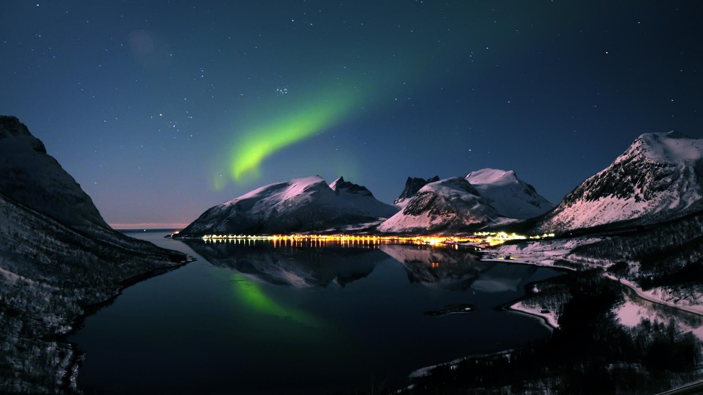
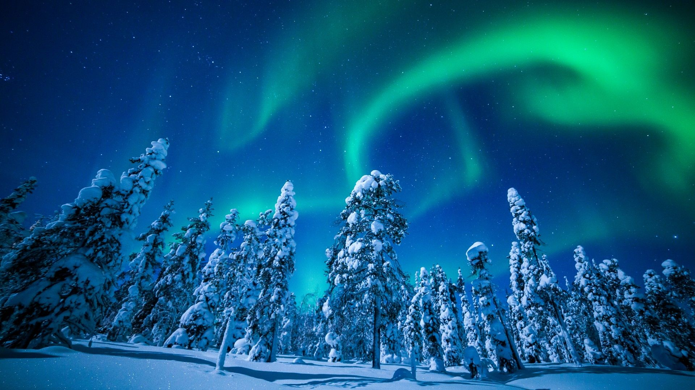

Une aurore boréale se produit lorsque des particules provenant du soleil, chargées en électricité, entrent en collision avec l’atmosphère terrestre. Les lumières produites, appelées aurores boréales ou polaires, sont visibles la nuit, lorsque le ciel est noir. Elles semblent danser un ballet céleste lumineux dans la nuit, à la palette de tons verts, bleus, rose et violets.
Les aurores boréales se produisent généralement par nuit claire, avec des conditions optimales par temps froid et sec. Il ne vous reste alors plus qu'à croiser les doigts pour qu’une éruption solaire projette des particules dans votre direction... Peut-être la grande diva verte vous fera-t-elle patienter. Qu’importe ! La Norvège du Nord vous réserve une multitude d’activités inoubliables
